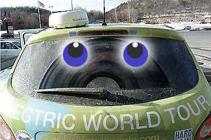
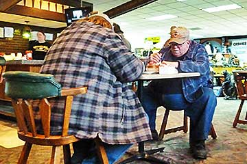
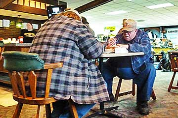
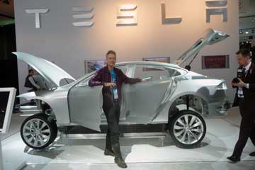

Farvel til USA. 7400 km fik vi kørt i det store land. New York var masser af sne (den mest snefulde januar nogensinde). Vi morede os med at hoppe foran Manhattan inden vi kørte ud til lageret og pakkede Grønne i containeren. På gensyn til Grønne i Spanien. Første marts starter vi på sidste etappe af rejsen jorden rundt.
Nina og Hjalte


New York modtog os med strålende solskin. På et højhus midt på Manhattan viste en tæller hvor mange tons drivhusgasser der befinder sig i atmosfæren. Tallet er astronomisk og vokser uafbrudt. 3,673,292,928,11 tons. Grønne sparer ca. 100 gram CO2 for hver kilometer i forhold til Qashqai benzinversion. På vores rejse har vi indtil nu kørt 20.000 km og sparet atmosfæren for 2 tons CO2. Hvis alle biler i New York blev elektriske kunne vi se tælleren begynde at gå nedad.
Hjalte

Jeg Grønne holder det snart ikke ud længere!. Jeg er dækket af vejsalt. Det svier over hele kroppen, under maven, på bagenden og over det hele. Og når Nina eller Hjalte rører ved mig bliver de helt hvide på tøjet. Jeg kører så blidt og lydløst som en engel, og så står de og siger at jeg aldrig været så snavset. Heldigvis har jeg stadig gode tykke slidbaner, så jeg kan stå fast i is og sne. Nina var derimod lige ved at vælte i går. Pludselig skøjtede hun af sted på et ben imens hun spjættede med armene. Slidbanerne under hendes sko er elendige, hun burde skifte til Continental dæk. Hjalte greb hendes computer, og hun fandt balancen igen. Det med at gå på sine egne ben er heller ikke populært i USA. Her kører man i bil fra vugge til grav.
Hilsen fra Grønne.


Den afstand en almindelig bil kan køre på et par timer bruger Grønne en hel dag på. Som de tidlige polarforskere kæmper vi os frem, kilometer efter kilometer med frost i tæerne. Vi forstår næsten ikke hvordan det kan gå så langsomt fremad. Man skal nok have prøvet det for at forstå det. Nattens strøm havde kun været 120 volt, så Grønne var kun halvt opladet da vi startede i morges. Formiddagens sidste 10% strøm gik til at lede efter strøm i nærheden af Milton. Vi fandt det på Jake's bilværksted. Da der var en ny type 100 ampere stikkontakt måtte Hjalte til at kombinere nogle løse ben, og det ene ben måtte slibes til. Nu står Grønne og lader med 220 volt. Imens sidder vi og spiser frokost og æblekage i en 4-5 timer på The Arrowhead Restuarant indtil Grønne er så opladet at vi kan komme videre. Udenfor flyder den store Susquehanna flod forbi. Hele området, restaurant og bilværksted og det hele, var oversvømmet i december og sådan er det næsten hvert år. Men ingen flytter. Restauranten har ligget her i 60 år og klaret 20 oversvømmelser.
Nina og Hjalte


Iskold morgen. Vi kører østpå ad Interstate 80 som går gennem Pennsylvanias store skove og lave bjerge. Hvidt og gråt og blå flænger i skyerne. Det er et nordisk landskab. Vi har advarselsblikket tændt og lastbilerne stryger forbi. Midt på dagen spiser vi på et truckstop og ved femtiden sætter vi ud på dagens anden etappe i mørke. Det gælder om at komme så langt som muligt. I god til kørte vi væk fra motorvejen for at finde et motel. Straks vi så bygningen var vi klar over at der ville vi ikke kunne få strøm ud til Grønne - huset var som en fæstning og værst af alt: central aircondition med lukkede installationer. Den næste adresse vi kørte efter viste sig at være en beboelsesejendom. En bed and breakfast som vi ringede til havde telefonsvarer på. Det næste motel vi fandt fyrede med olie og havde ingen 220 volt strøm. På den sidste procent strøm kørte vi til et motel udenfor byen. Uheldigvis kunne vi ikke få mere end 110 volt ud af stikket på værelset. Men vi var nødt til at blive, Grønne kunne ikke mere. Vi havde ikke været forberedt på at køre forgæves hele fire gange!
Nina og Hjalte
 

De fleste elbilejere lader bilen op hjemme og kører kun frem og tilbage til arbejde eller på indkøb. Det er nemt og bekvemt. At køre langt i elbil handler om at finde strøm udenfor hjemmet, hvad der ikke altid er så nemt. Underligt nok, for der er jo elektricitet allevegne. Men der er altid omstændigheder. Så idag tilbragte vi fire timer i en stor gavebutik med cafeteria. Imens fik Grønne en ledning ud ad bagdøren. Til natten fandt vi et motel hvor en venlig kvinde i receptionen gav os et værelse med strøm til Grønne, og et andet værelse med varmeovn til os. Så heldige kan vi også være. Vi nærmer os New York...
Nina


The Northmerican International Auto Show gav os en masse promovering - tak skal I have! Det var alletiders at dele vores eventyr med jer og tilhørerne til vores pressekonference. Billederne fra Gobi-ørkenen gav en ide om hvad vi har været igennem og hvad Grønne har klaret. På Venturis stand mødte vi Xavier Chevrin som kørte fra Shanghai til Paris med sin kone Géraldine Gabin i en Citroen EV. Elbils-ekspeditioner skaber vor tids eventyr. Vi håber at møde dem begge i Monaco til Monte Carlo Rally for elektriske biler. Da vi kørte hjem fra udstillingen gav vinteren os en smagsprøve på en Michigan snestorm. Linda og Bruce, vores generøse værter fra Electro Auto Association har samlet nogle klip med Grønne fra medierne:
Detroit Free Press: http://www.freep.com/article/20110112/BUSINESS01/101120373/-1/BLOG14/x26template/x3drss/x26mime/x3dxml/Around-world-in-11-months-for-Danish-Moto-Mundo-duo
WOMC Radio: http://womc.radio.com/tag/moto-mundo/
SATnews Daily: http://www.satnews.com/cgi-bin/story.cgi?number=1714272154
AutoBlog Green: http://green.autoblog.com/2010/12/21/moto-mundos-nissan-qashqai-electric-detroit-auto-show/
NextCars.net: http://www.nextcars.net/moto-mundos-nissan-qashqai-electric-travels-around-the-world-to-visit-detroit-auto-show/
Engadget: http://www.engadget.com/2010/12/23/moto-mundo-world-tour-pushes-all-electric-nissan-qashqai-to-its/


I klingende frost og tindrende sol kører jeg, Grønne, ind i Detroit, bilernes hovedstad. Glad og stolt standser jeg foran portene til North American International Auto Show på den aftalte dag. Skyskraberhøje bannere viser nye bilmodeller, Porte glider op og jeg bliver vist på plads i den enorme underetage mellem de nye elbiler. Hektisk aktivitet, arbejdere, elektrikere, arrangører. En mand polerer mig, ladestandere er tilsluttet og i morgen vil jeg give journalisterne en prøvetur på banen i underetagen.
Mange hilsner Grønne

Bruce og Linda kørte med os de 60 km ind til Detroit i deres hybrid-Ford. Vi fandt Autoshowet og fik Grønne kørt ind. Den store udstilling skulle åbne næste dag og der blev arbejdet overalt. Alle de nye biler stod og skinnede. Igen i år var de spændende nyheder elektriske biler. Næsten alle de store bilfabrikker var på vej med elektriske biler. En af de smukkeste var den nye Tesla familiebil, hvis skinnende aluminiumskrop svævede over gulvet - og den barske motor. På vejen hjem så vi på Detroit, en af USAs storbyer værst ramt af nedgang og arbejdsløshed. Rundt om en lille kerne af skyskrabere ruiner og tomhed. Om morgenen havde Bruce, der havde haft ansvar for miljøtiltag på en af Fords fabrikker, talt på en konference om nye jobs i Michigans nye grøn industri. Men vi er kommet sent igang, sagde han til os. Linda have arbejdet på biblioteket i univertsitetsbyen Ann Arbor 50 km fra Detroit. En meget afslappet by fuld af studenter og fodgængere. Vi spiste alle fire en dejlig middag på et mikrobryggeri med restaurant.
Nina og Hjalte


Om morgenen var alt dækket af et tykt lag sne som gnistrede og blinkede i ni graders frost. Vi kørte af sted fra Waterloo forsynet med varm kaffe og en isskraber. Vi kunne konstatere at i så hård frost kørte Grønne fint, men ikke mere end 1,2 km pr. procent opladning. Vi snuppede derfor en frokost-opladning på et par timer. Så fortsatte vi, stadig uden varme i bilen for at spare på strømmen ad den gamle hovedvej 12 fra Chicago til Detroit. I Saline havde Linda fra elbilklubben på vores hjemmeside set Grønne nærme sig, så hun stod ude på gaden og bød os velkommen da vi rundede gadehjørnet! Grønne fik straks strøm i Linda og Bruce's garage, og vi kom indenfor i et varmt gammelt træhus hos de søde mennesker. En time senere kørte vi af sted for at spise middag med den lokale elbilforening. Nogle havde hjemmebyggede elbiler, eller hybrider og en gammel mand havde en original elbil fra 1920!
Nina